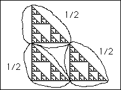
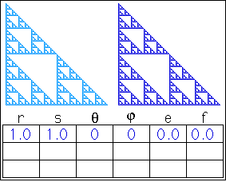

| We begin with a right isosceles Sierpinski gasket. Certainly, the gasket can be viewed as made up of three copies of itself, each scaled by a factor of 1/2 in both the x- and y-directions. |
|  |
| To determine the translation amount of each piece, take some point of the whole fractal (the lower left corner, for example) and observe where that point goes in each piece. |
| Here we derive the rules for the right isosceles Sierpinski gasket. Click the picture to repeat the animation. |
|  |
Return to Iterated Function Systems